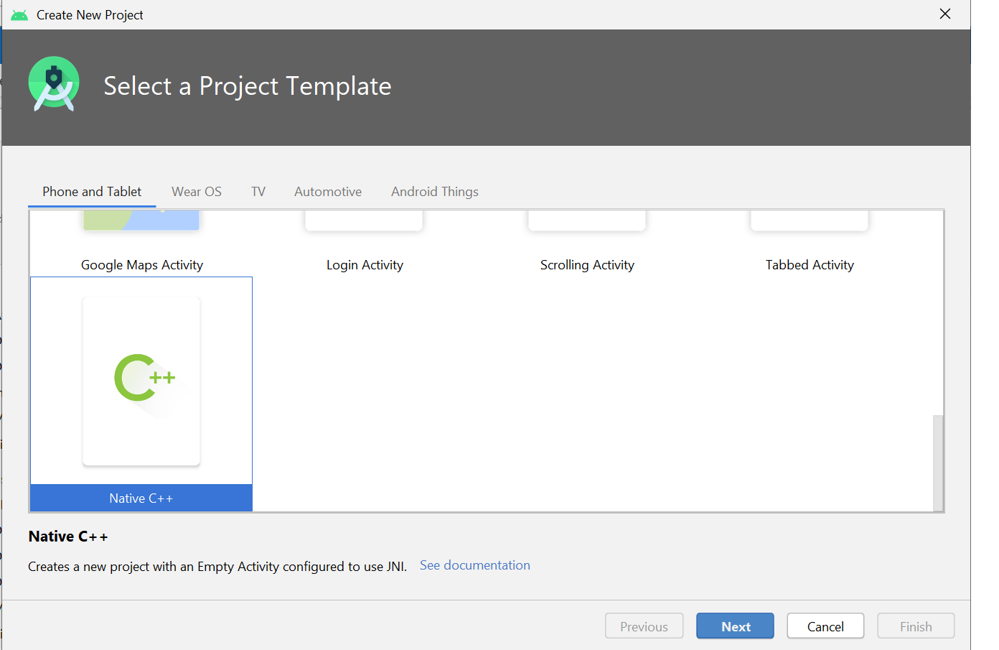
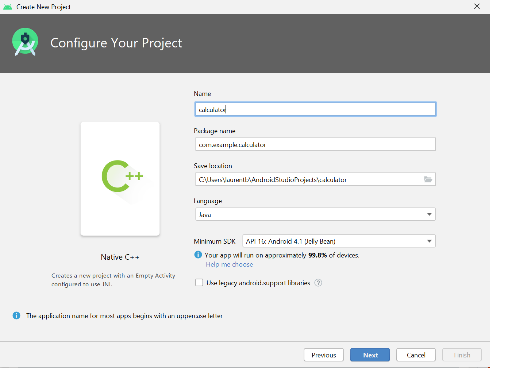
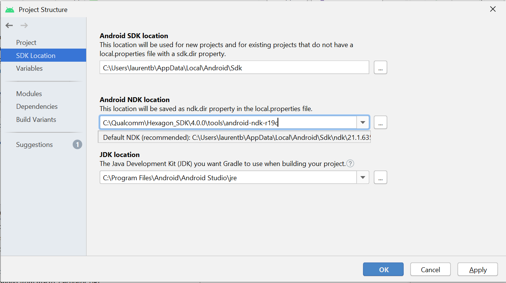
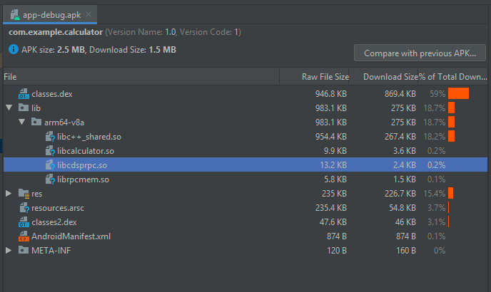
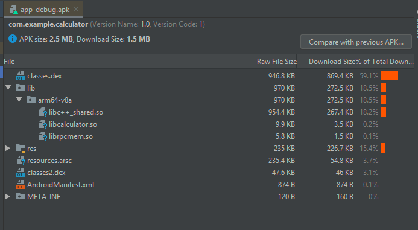

Calculator C++ APK example
This example illustrates how to build an end-to-end Android APK that uses C++ APIs in the Android application layer and offloads computation to the DSP.
Starting with Android-P, access to /system libraries from the /vendor partition and vice-versa are prohibited with the addition of Treble restrictions. Hence, vendor applications do not have access to the libc++_shared.so library located in /system. However APKs have access to the libray located in system. Thus using C++ in an Android vendor application requires constructing an APK that dynamically links to the C++ libraries.
APKs are untrusted applications. Starting with Android-R untrusted applications cannot create signed PDs on the DSPs for offloading. They can only create unsigned PDs on the compute DSP for offloading. Hence this example uses unsigned PD.
On-target testing
This section describes installation and use of the existing pre-compiled APK calculator_c++.apk on the device. To run the APK on device, you will need to install the APK and push the Hexagon shared object onto your device. This APK can run directly on all LA devices supported in the Hexagon SDK.
Install the APK
The example comes with a pre-existing APK that can be installed on device directly. For instructions on how to modify the implementation and rebuild the APK, see how to customize the application.
To install the existing APK on device, execute the following command:
adb install calculator_c++.apk
Generate and push the DSP shared object
The DSP source code of the calculator C++ APK example is under $HEXAGON_SDK_ROOT/examples/calculator_c++_apk/dsp. You can build the DSP shared object with the following instructions:
cd dsp
make hexagon BUILD=Debug DSP_ARCH=v65
Refer to the build instructions of the calculator example for more details on building shared objects.
When the shared object is ready, push it to /vendor/lib/rfsa/dsp on your Android device. For example:
adb root
adb remount
adb push hexagon_Debug_toolv84_v65\ship\libcalculator_skel.so /vendor/lib/rfsa/dsp
Application customization
The steps below explain how to recreate the APK introduced in the previous section. We first create a new Android Studio project that uses Java as the Android app development language and the Java Native Interface (JNI) for enabling native C/C++ support and thus interfacing the DSP. We then customize both the project setup and the source code to build the customized APK with the tools used with the Hexagon SDK.
Create a new Android Studio project
- Use this link to download and install the Android SDK.
- If you are new to Android Studio, familiarize yourself with existing online tutorials to learn how to create, build, and run projects
- Create a new Android Native C++ project. Native development enables the Java application to interface C methods, which can then make FastRPC calls to offload workload on the Hexagon DSP. 
- Select the following options
- Name your project
calculator - Select Java as the language
- Default toolchain (on the next configuration page) 
- Name your project
Customize the project compilation tools
This section explains how to configure your Android Studio project to use external compilation tools provided with the Hexagon SDK instead of using the Android Studio SDK manager to download and bundle these tools as part of Android Studio.
Android NDK
Under File --> Project Structure --> SDK Location, set the Android NDK location to where the Android NDK is installed with the Hexagon SDK. For example, assuming the Hexagon SDK is installed under C:\Qualcomm\Hexagon_SDK\4.4.0.0:
Android NDK location: C:\Qualcomm\Hexagon_SDK\4.4.0.0\tools\android-ndk-r19c

cmake
Edit the local.properties file of the calculator project to set cmake.dir to the path where the cmake version installed with the Hexagon SDK is installed. Make sure to precede each special character : and \ with \. For example, using the same assumption as above for the Hexagon SDK install location:
cmake.dir=C\:\\Qualcomm\\Hexagon_SDK\\4.4.0.0\\tools\\utils\\cmake-3.17.0-win64-x64
Note:
-
The Android SDK relies on the build system Ninja for the CMake backend. In order to use the external version of CMake, you need to download, put the
ninja.exeexecutable on your system path, and then restart Android Studio. -
When creating a new project, Android Studio sets the cmake version to a default value in the
build.gradlefile of theappmodule:externalNativeBuild { cmake { path "src/main/cpp/CMakeLists.txt" version "3.10.2" } }This version may differ from the one provided in the Hexagon SDK, which will cause a failure. Remove the cmake version number specified as follows:
externalNativeBuild { cmake { path "src/main/cpp/CMakeLists.txt" } }
Customize the project source files
The calculator_c++_apk example folder contains all the source files you need to customize the native C++ project you just created following the instructions above. These source files demonstrate how to offload a workload onto the DSP.
We recommend that you compare side by side the files present in your newly created Android Studio calculator project with those included under the app folder of the Hexagon SDK calculator_c++_apk example to understand how to modify the project.
Alternatively, you may add all the provided source files to your project with a simple copy command as follows:
cp -fr app\src\main\* C:\Users\<your_user_name>\AndroidStudioProjects\calculator\app\src\main\
Note: We do not guarantee that this approach will always work as Android Studio evolves rapidly and modifying files when Android Studio synchronizes a project may generate some errors.
This command adds or replaces the following source files to your project:
| File name | Description |
|---|---|
| AndroidManifest.xml | General information about the application to the Android build tools, the Android operating system, and Google Play. The modified manifest file adds a declaration of DisplayResults.java as an activity. |
| MainActivity.java | Functionality of the main screen when the application opens |
| DisplayResults.java | Functionality of the screen used to display the results of the calculator |
| activity_main.xml | Layout for the main screen of the application |
| activity_display_result.xml | Layout for the screen used to display the results of the calculator |
| strings.xml | String values to be displayed on screen |
| calculator-jni.cpp | JNI file contains the function implemented to make a remote call calculator_sum to the DSP |
| CMakeLists.txt | CMake configuration file containing the rules to compile the IDL and JNI cpp source files, and link the required Hexagon SDK libraries needed to offload a workload onto the DSP |
Customize the project build.gradle file
The build.gradle of the app module file maintained in the calculator project configures the build for the calculator project. Two changes are needed:
-
Add a cmake argument to externalNativeBuild to dynamically link libc++_shared.so to the application:
externalNativeBuild { cmake { cppFlags "" arguments "-DANDROID_STL=c++_shared" } } -
Specify the ABI filter for the NDK
Since different Android handsets use different CPUs, it is required to specify a compatible Android Binary Interface(ABI) for each CPU architecture an application works with. Below we are specifying a default variant as 64-bit arm V8a instruction set.
ndk { moduleName "calculator" abiFilter "arm64-v8a" ldLibs "log" }
The build.gradle provided under the app folder illustrates how to set both of these properties.
Testing the customized APK
After following all the customization steps above and building the project in Android Studio, you should obtain a new APK file under the app\build\outputs\apk\debug folder of your Android Studio project. Install this new APK on your device as explained earlier to confirm that your calculator application still works as expected.
Debugging
Gradle sync issues
Please note that if you are facing synchronization issues with the Gradle build system on the Android SDK, use the documentation provided in the link to update your IDE and Android SDK tools.
Debugging on-target errors
Analyze the application-processor and DSP logs to debug on-target functionality of the application. For more information on debugging and logging, please refer to debug and messaging documentation, respectively.
libcdsprpc.so packaged in APK
If you are seeing issues when running the APK on the device because APK is picking the stubbed version of rpcmem APIs, you should check if the compiled APK is packaging the stubbed version of remote library libcdsprpc.so into the APK. The following logs in the logcat would mean that the stubbed library is packaged into the APK.
remote.c:110:rpcmem alloc stubbed routine - Return failure
remote.c:100:Invoking stubbed routine - Return failure
You can view the APK in Android Studio or simply unzip the APK in Windows explorer to find out if the library libcdsprpc.so is packaged. In Android Studio, an APK looks like this.

Ideally when the library is not packaged, the APK looks like this.

To fix this issue, you can add the following packaging rule in build.gradle of the app module. This prevents the inclusion of the stubbed library into the APK.
android {
packagingOptions {
exclude "lib/arm64-v8a/libcdsprpc.so"
}
}